After finding the river Rotte in the centre of the city, cycling along the water is a pleasant way to head out of town. Once across the North ring motorway, you immediately join a road-free cycle path that you follow all the way past the Rottermeren lakes. Unfortunately, this narrow path is packed with other cyclists on sunny weekends, so although navigation is easy you have to be careful to avoid collisions. Distance: around 20 Km.
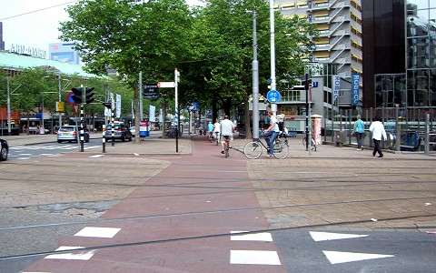
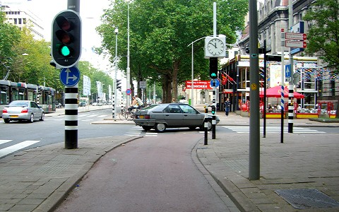
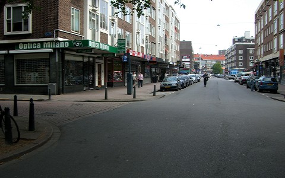
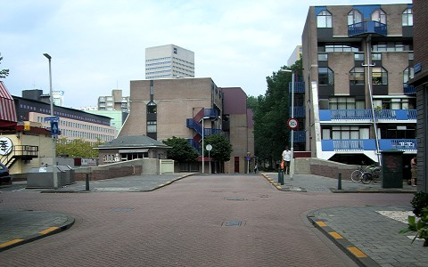
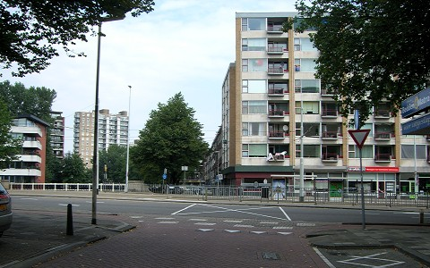
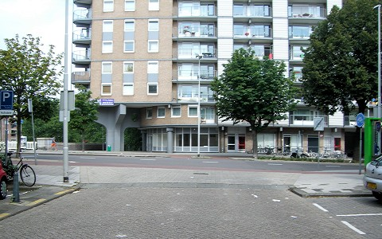
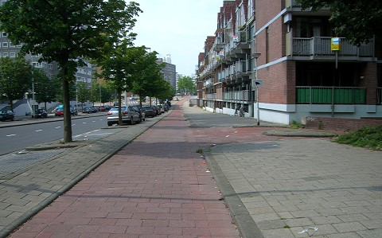
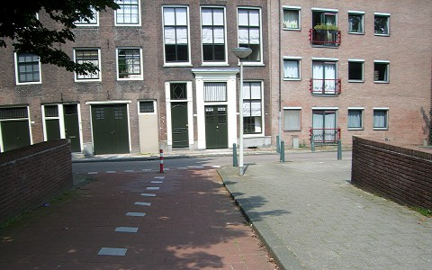
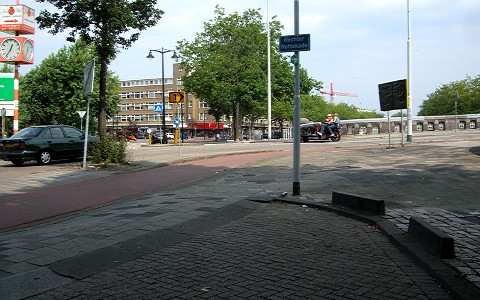
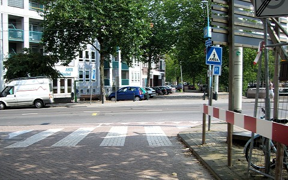
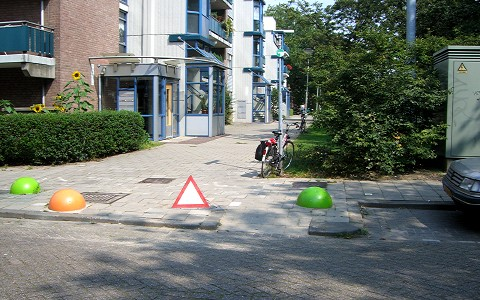
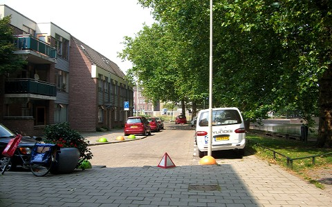
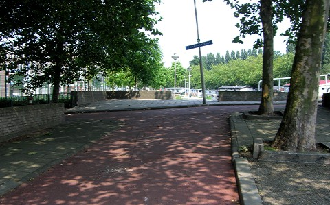
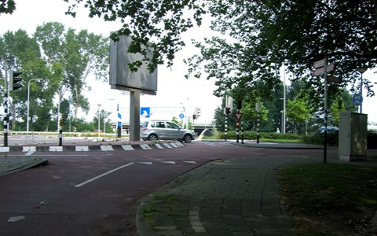
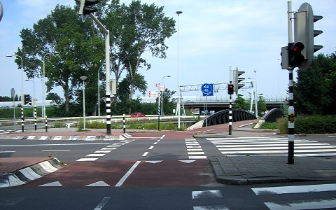
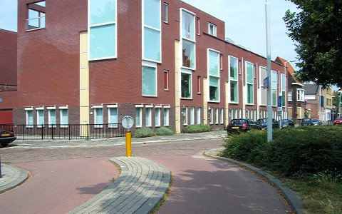
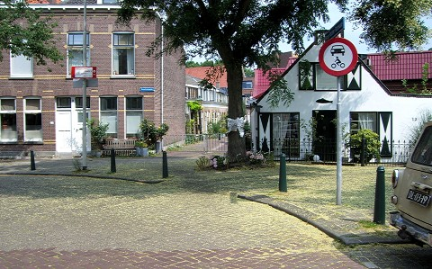
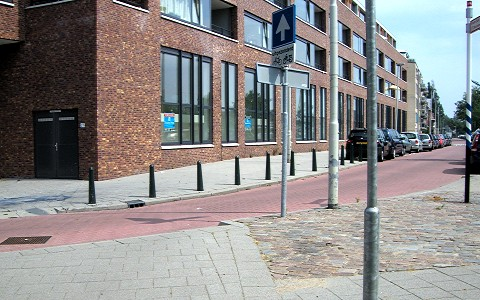
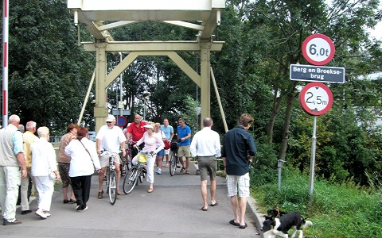
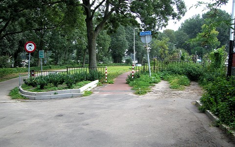
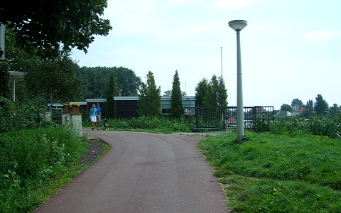
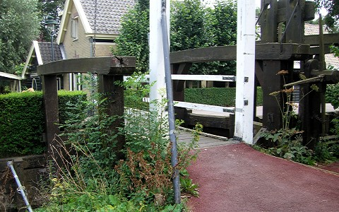
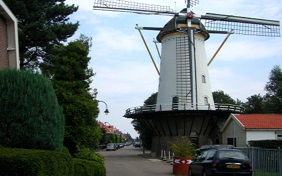
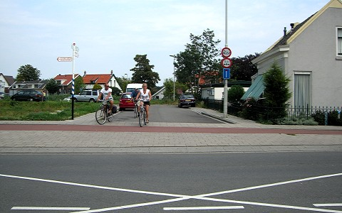
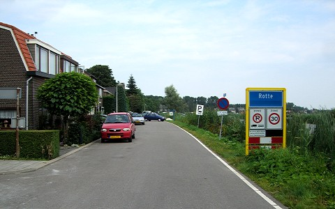


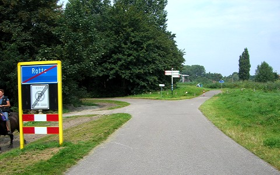
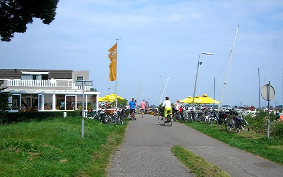
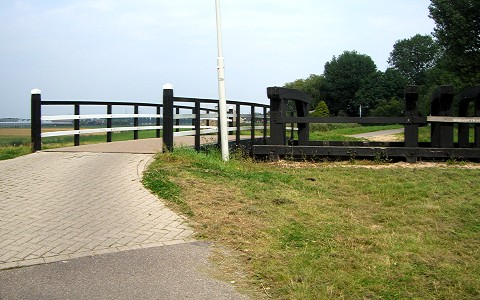
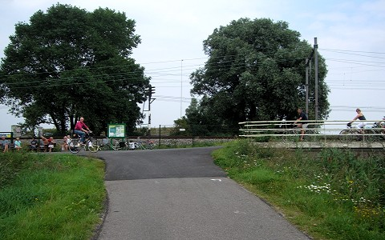
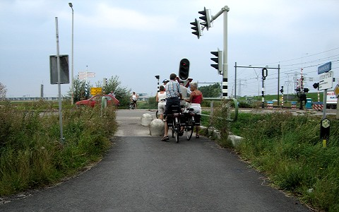
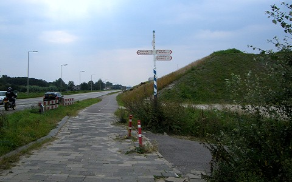